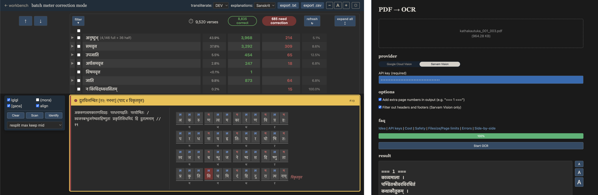
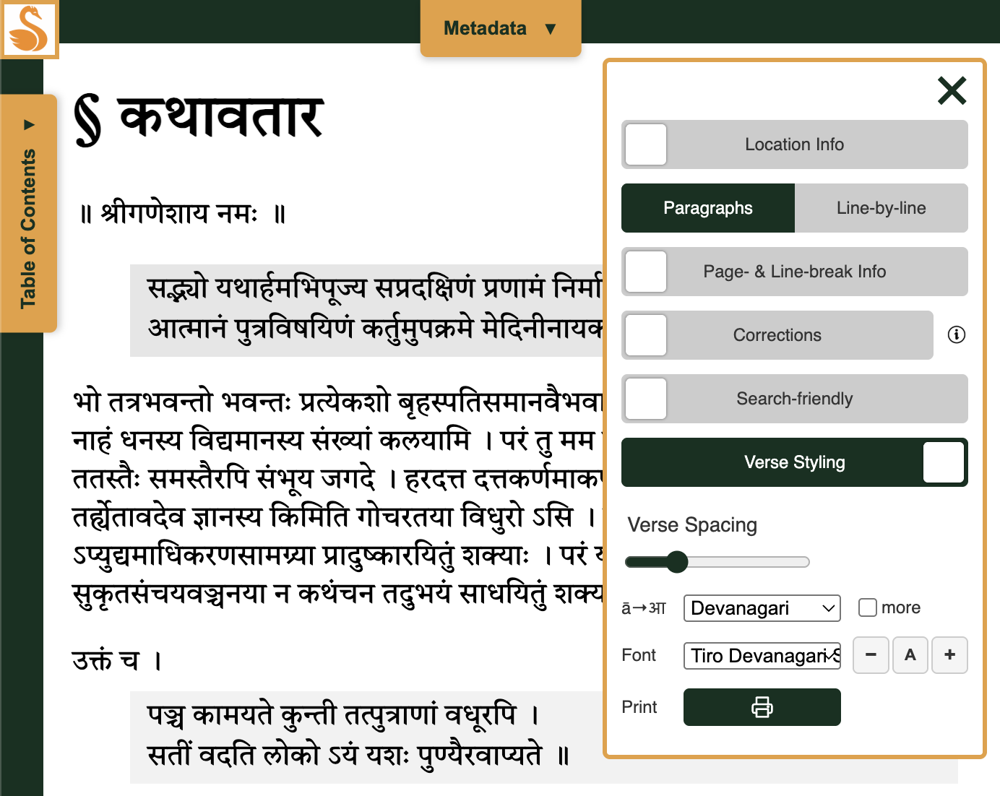

This is the second quarterly update ranging over all Kalpataru Grove projects and related research. See the 2026 Q1 post here.
This spring was fun!
Main Quest: Skrutable meter and OCR
Skrutable got two big and interesting upgrades. One is a turbo-charged meter identification interface, which is vastly more informative and also just more fun to use. The other is Sarvam Vision as a second OCR option, at a higher price point but delivering deliciously improved results.

The meter work got me interested in the Mahāsubhāṣitasaṃgraha (MSS), a massive modern reference work on Sanskrit verse. Out of nine volumes published, only five are represented in the lone e-text online (an anonymous and imperfect GRETIL item). I've started (re)-digitizing it in full, and the finished product will go on HANSEL, along with a meter benchmark dataset based on it, which can be used to properly assess Skrutable and similar computational chandas projects.
Side Quests
As for HANSEL, only one new text was published — Prabodhacandrodaya by Kṛṣṇa Miśra. As it turns out, though, not only that text but also several others need real work. In truth, the system and its standards are still developing, and I'm trying hard to shore up the foundation before racing ahead to add more texts. A small number of additional bells and whistles also felt right along the way: the front-end now offers more beautiful fonts (Tiro and Noto Serif) and a PDF print option. In short, the project is in a slow phase, but it's on track.

At an infrastructure level, the "Kalpataru Grove" concept is becoming more tangible and load-bearing in the form of shared tooling (e.g., see PR list). This is good not only for transparency, but also to help me cross-pollinate best practices among projects wherever possible.
Finally, something that is not Kalpataru Grove per se, but which is definitely feeding back into it (and vice versa): I've been working for some time now with Muktabodha as their new Technical Director. Colleagues Jason Schwartz, Ben Williams, and I have been hard at work creating a new interface, adding a bunch of new texts — prepared by the good and skilled people at the IFP and in Varanasi — and trying to clean up the collection overall. We're rolling out slowly and carefully, and proper announcements will follow eventually.
Onward
Q3 has lots in store. Skrutable will join Vātāyana and Pāṇḍitya in maintenance mode, but I'll likely start to write up the improved meter capacities for publication. HANSEL hopes to shift from feature development to data input (the planned additions). And I'll keep working with Muktabodha, hopefully incorporating about 100 new items. My real focus, though, will be at the multi-corpus level. First, SETI will get a badly-needed update. Second and more interestingly: I'm now evolving my exploratory work on Sanskrit Wikisource (so far shared informally as a prototype) into what may end up being Kalpataru Grove's most useful component project yet (new .info domain name already purchased!).